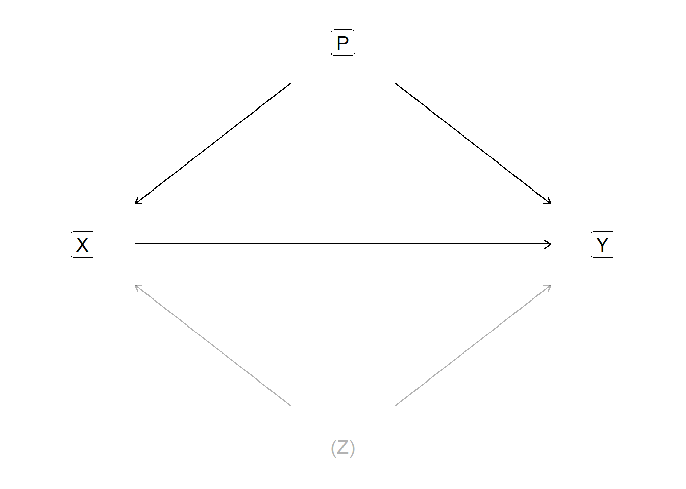
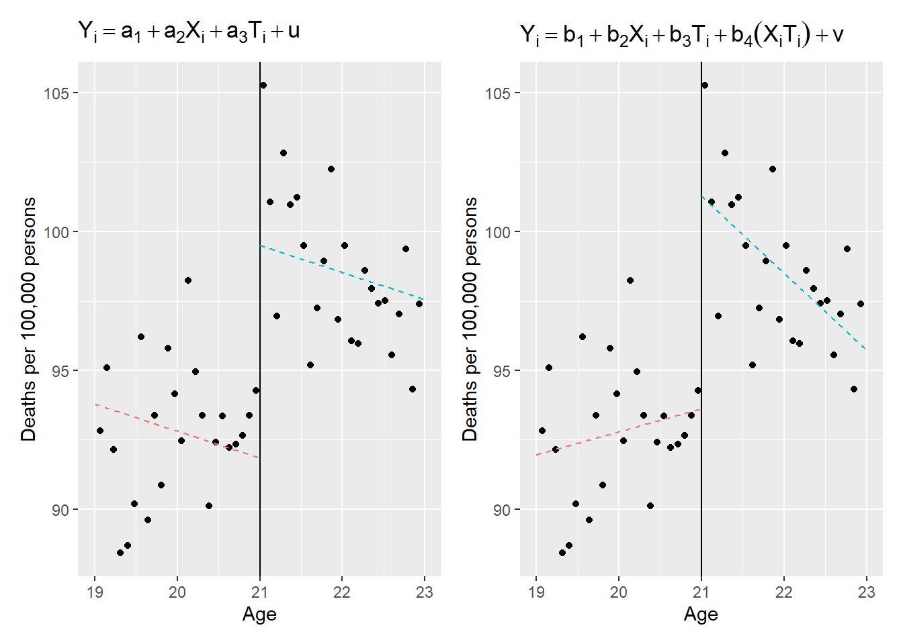
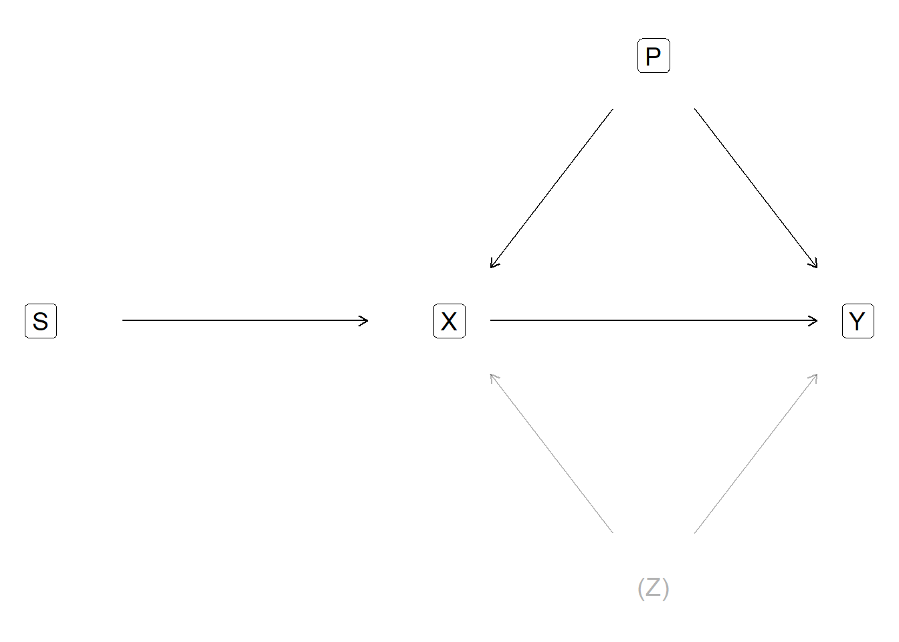
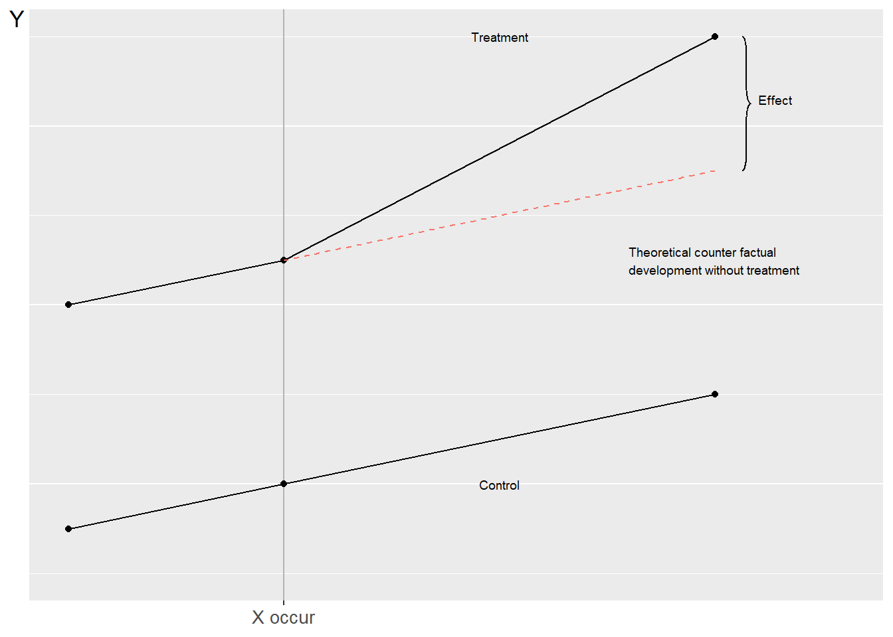

Chapter 27 Regression Analysis for Causal Relationships
This chapter introduces some examples of how we can use regression analysis to study causal relationships. The chapter provides a brief overview of some of the most well-known methods. Within each method there are many variants and also combinations of different methods, which cannot be described here.
27.1 We need special methods to study cause and effect
In chapter 20 we introduced counterfactual analysis for studying causal relationships. In the previous chapter we went through how we can include several explanatory variables in our regression model and thereby study the covariation between two variables with regard to the variation in other variables.
Say now, greatly simplified, that we have a theory that a medicine (X) reduces the amount of disease symptoms (Y) in patients. We have found a group of patients who all have the same amount of disease symptoms, which we have divided into a treatment group (that receives medicine) and a control group (that does not receive medicine). To examine the medicine’s effect on the disease symptoms we set up the following regression model:
\[ \begin{equation} Y=\alpha+\beta X+\epsilon \end{equation} \]
By observing the covariation between medicine and disease symptoms the estimated \(\hat{\beta}\) will give us a measure of the medicine’s \(X\) effect on the disease symptoms \(Y\). If the medicine works we expect that \(\beta\) will be negative, that is, that the medicine \(X\) reduces symptoms \(Y\). One problem, among several possible ones, is that for us to be able to interpret \(\hat{\beta}\) as a correct measure of the medicine we must be certain that no other phenomena affect the medicine and the disease symptoms.
Suppose that we know from previous research that there are several other things that both affect the medicine’s effect and the disease symptom itself. This can involve things like gender, age and so forth that we can include in our study.
But in addition there are some additional phenomena that we have strong reasons to believe are important for both the medicine and the symptoms, but for which we lack data. And if we lack data, we cannot use it in our regression model.
27.2 Illustration with a DAG
Figure 27.1 illustrates an example of how this sort of problem can look. The arrow from X to Y describes the causal relationship that we are interested in. For us to be able to estimate what effect X has on Y we must partly establish that when a variation in X occurs, caused without connection to Y, then a variation in Y also occurs. In this case we decide that the treatment group takes the medicine, which is the induced variation in X. This is called exogenous variation, that is, a change in X that comes “from outside”. The variation does not come from Y.

Figure 27.1: To estimate the effect of X on Y, we must control for P and Z
But to estimate the effect of X on Y we must also take into account the two phenomena P and Z that affect both X and Y. Phenomenon P is observable but phenomenon Z refers to something for which data is lacking and for which there may never be data. If we do not adjust our analysis for P and Z, the variations we observe in X and Y, as well as the covariation between them, will be wholly or partly caused by P and Z.
The graph in figure 27.1 is called a Directed Acyclic Graph (DAG). The graph describes an example and additional challenges of a similar kind are also conceivable, but are not discussed here.
In the previous chapter we saw how the absence or presence of other variables can affect all results in the regression model. It is therefore important that we think carefully about how we design our study. If we perform a controlled experiment, for example randomly divide the patients into 2 groups and give one group medicine, our possibilities to control for all important phenomena increase. But not even a randomized experiment is any guarantee that our analysis will be correct. We must still think carefully about the conditions of our study and ensure, as best we can, that no other phenomenon affects our analysis.
To design our study and regression model we can produce different types of materials, study other covariations, try different solutions and compare results. This work is something that analysts must decide from case to case. Regardless of how advanced method or how many observations and variables we have, there is no method for proving exactly which variables should be included in an analysis.
Sometimes it is tempting to believe that if we find some incredibly smart theoretical model that describes how the entire world works, that is in itself proof of how a regression model should be designed. Ideas and theories are the foundation for all analysis but that is not in itself proof for including or excluding precisely the variables we have at our disposal. This type of difficulty has been well-known for a long time and discussed extensively within social science. Two recommended texts on the topic are Hendry (1980) and Leamer (1983).
27.3 Both the presence and absence of variables can affect our results
As we went through in section 20.3 it is often impossible to conduct controlled experiments within social science. It is easy to believe that this means we might as well make statements about causal relationships since no one knows anyway. This is simply not true. The difficulty of making statements about causal relationships does not lower requirements.
Instead of experiments, social scientists are often referred to quasi-experimental observational studies where treatment and control groups for example are created by analysts managing to identify a process that, without intention, distributes a sufficiently large amount of observations randomly into treatment and control. Even in these situations we must examine whether our assumptions in the analysis are reasonable, for example that the distribution really occurred randomly. One may for instance do this by comparing the treatment and control groups’ characteristics and thereby check that the only important difference between the groups is the treatment itself. If the observable characteristics are equivalent it is sometimes save to assume that the non-observable characteristics are too.
Many such methods are based precisely on no phenomenon affecting the distribution (selection) to the treatment and control group. Say for example that we are to study what effect an education (X) will have on participants’ future earnings (Y). If we compare the participants’ earnings with the rest of the population we risk other non-observable characteristics (Z) of the participants both explaining why they participated in the education (X) and their earnings (Y). We therefore cannot estimate the effect in this way. Characteristic Z can for example be that the students on average have better conditions or higher ambitions than the population at large.
There are several different well-known methods for how to identify or create treatment and control groups in quasi-experimental studies. In this chapter some well-known such methods are introduced in overview and it is described how to use regression analysis to study cause and effect.
27.4 Regression discontinuity
Regression discontinuity is a method for identifying and comparing treatment and control groups in an observational study. The method is based on us being able to observe variations around a threshold with significance for both treatment and outcome. Small variations around the threshold can be assumed to be random, which is why this can be used to divide observations into treatment and control.
Let us again imagine that we are to study what effect an education has on participants’ future earnings. Admission to the education occurs with an entrance exam where one must get at least 92 points to be admitted. We now think that those who got just over and under 92 points have equivalent skills. Some had a bad day and some had an unusually good day. The students who ended up just over 92 points and were admitted become our treatment group. The students who ended up just under 92 points and were not admitted become our control group. To check whether the treatment and control groups have equivalent skills we may compare the relevant characteristics, such as age, previous performance, previous education and so forth.
Consider another example. Many countries have age limits for when one may buy stronger alcoholic beverages. That alcohol is directly harmful and also indirectly increases the risk of various negative effects is well-known. At the same time it can be difficult to estimate in detail the harmful effects (phenomenon Y) of increased access to alcohol (phenomenon X) at the societal level since people who fare badly may have other destructive habits (phenomena P and Z).
One way to estimate the effect is to use the age limit for purchasing alcoholic beverages as a threshold to estimate variations in consumption and harm around the time when people get increased access to alcohol. Carpenter and Dobkin (2009) present such an analysis for the USA, where the age limit is 21 years. Their work shows that drinking increases relatively sharply shortly after the 21st birthday while traffic accidents, suicides and various alcohol-related deaths increase.
Exactly how we should design our regression model when we use regression discontinuity depends on what type of effects we want to study. We illustrate here two examples based on the data that Carpenter and Dobkin (2009) present. We begin with the following regression model:
\[ \begin{equation} Y_{i}=a_{1}+a_{2}X_{i}+a_{3}T_{i}+u_{i} \tag{27.1} \end{equation} \]
where \(a_{1},a_{2}\) and \(a_{3}\) are coefficients. \(Y_{i}\) is the number of alcohol-related deaths per 100,000 inhabitants in respective age group i, where each age group is divided into months: 19 years and 1 month, 19 years and 2 months, and so on. Variable X is age calculated in months. T is a dummy variable that is \(T=0\) for the age groups that are under 21 and \(T=1\) for the age groups that have turned 21. \(u_{i}\) is the error term for age group i. The coefficient \(a_{3}\) that is multiplied by T will in this regression model describe the effect that the 21st birthday has on alcohol-related mortality.
The coefficient \(a_{2}\) in the regression model in equation (27.1) estimates the covariation between mortality \(\left(Y\right)\) and age \(\left(X\right)\). But this covariation can also be thought to change when a person turns 21. To control for this we add an interaction term for X*T:
\[ \begin{equation} Y_{i}=b_{1}+b_{2}X_{i}+b_{3}T_{i}+b_{4}\left(X_{i}*T_{i}\right)+V_{i} \tag{27.2} \end{equation} \]
where \(b_{1},b_{2},b_{3}\) and \(b_{4}\) are coefficients, \(Y,X\) and \(T\) are the same variables as in the regression model in equation (27.1) and \(V\) is the error term. The interaction term \(b_{4}\left(X_{i}*T_{i}\right)\) estimates changes in the covariation between alcohol consumption and mortality.

Figure 27.2: Regression discontinuity. Data from Carpenter and Dobkin (2009)
The two regression models are illustrated in figure 27.2 where both graphs use the same data, obtained from Carpenter and Dobkin (2009) . The vertical line in the middle of each graph marks the time when the people in the study turn 21. To the left of the line the average number of deaths is shown for people just under 21 and to the right deaths for those who have just turned 21.
In the left graph we see two regression lines, where both are estimated with the regression model in equation (27.1) . The regression line to the left, for the age groups under 21, is drawn with \(T=0\) and slopes downward. For the age groups over 21, to the right in the left graph, the regression line is drawn with \(T=1\). The right regression line in the left graph shifts up at 21 years of age, which indicates that mortality rises sharply after the 21st birthday as people have the opportunity to buy alcohol. The two regression lines in the left graph have the same slope, since we only estimate one slope coefficient for age in the regression model in equation (27.1) .
In the right graph we also see two regression lines that are estimated based on the regression model in equation (27.2) . For the age groups over 21, to the right in the graph, the line shifts up. The slope also changes. For the age groups under 21, to the left in the right graph, a positive correlation between alcohol-related mortality and age is visible. For the age groups over 21 a negative correlation between alcohol-related mortality and age is instead visible.
27.5 Instrumental variable
Another way to handle the problems that observable and non-observable phenomena like P and Z entail is to use instrumental variable analysis. The method is based on us finding another phenomenon S that is not affected by Z, does not affect Y directly but affects X, and thereby Y. A random variation in S causes a variation in X which in turn affects Y. The effect S has on X is possible to isolate and thereby also estimate the variation in X (caused by S) that affects Y. Figure 27.3 illustrates the basic logic in this. Phenomenon S affects only Y via its impact on X.

Figure 27.3: Instrumental variable S
Instrumental variable analysis is used for different things within social science. The oldest known example was presented in a book by Philip G. Wright (1928) and was based on work together with his son Sewal. Wright wanted to estimate the price elasticity in supply and demand for linseed oil, that is, percentage changes in supply or demand at percentage price changes (see section 10.10 and 8.4 ).
If we directly compare the covariation between price and quantity in society we cannot distinguish whether we observe the shape of the supply and demand curves (elasticity), or observe different points where supply and demand meet (price and quantity in equilibrium). To handle this Wright instead observed different phenomena that can be thought to shift the supply or demand curve, without affecting the other curve. For example Wright argued that the yield per cultivation hectare affects supply without affecting demand, which is why short-term changes in yield can be used as an instrumental variable to study how the supply curve moves while the demand curve is constant.
Instrumental variables are also commonly occurring within studies concerning cause and effect. Angrist (1990) compared in a well-known study economic effects for American soldiers who participated in the Vietnam War. One way to study this is to compare former military personnel’s earnings with the rest of the male population. The selection of soldiers risks however distorting the results, if the men who did military service perhaps had other conditions than the rest of the population. For example, perhaps many men knew that they had poor conditions in the labor market and therefore chose voluntarily to enlist.
In the early 1970s the American state arranged a lottery that gave young adult men a number randomly, which determined whether they would be forced to go to Vietnam. The lottery (instrumental variable S) explains variation in war participation (variable X) but has no direct impact on participants’ earnings (variable Y). However S can affect Y via the effect S has on X and thereby on Y. Angrist’s analysis shows that the men who through the lottery were assigned military service had clearly worse earnings ten years after the war compared to corresponding men who did not participate in the war. This broke at least partly with other previous studies that instead found that war veterans on average had better economy.
In practical terms regression analysis with instrumental variables can proceed in slightly different ways. Here we content ourselves with a simpler description of a popular method, called Two-Stage Least Squares (abbreviated 2SLS), which in Swedish means roughly the least squares method in two stages. We have the regression model:
\[ \begin{equation} Y=a+bX+u \tag{27.3} \end{equation} \]
where a and b are coefficients, u is error term and \(Y\) and \(X\) are the variables. We have good reasons to believe that \(X\) causes changes in \(Y\) but that another factor (phenomenon \(Z\)) explains variations in both \(X\) and \(Y\). Mathematically this means that \(X\) covaries with the error term u, that is, the covariance \(\left(cov\right)\) between \(X\) and u is not equal to 0: \(cov\left(X,u\right)\neq0\)(see chapter 26 ).
To handle this we use the instrument \(S\), which correlates with \(X\) but not with \(Y\). Another way to describe this is that \(S\) does not covary with the error term \(u\): \(cov\left(S,u\right)=0\). The variable \(S\) explains variations in \(X\) and thereby indirectly also affects \(Y\). What we are now seeking is a measure of what influence \(S\) has on \(X\) and thereby on \(Y\), which we can describe with the following regression model:
\[ \begin{equation} X=c+dS+v \tag{27.4} \end{equation} \]
This model captures the variation in \(X\) that is caused by \(S\). The predicted variable \(\hat{X}\) from this regression model we then use to create the following regression model:
\[ \begin{equation} Y=e+f\hat{X}+\epsilon \end{equation} \]
where \(e\) and \(f\) are coefficients, \(\epsilon\) is error term and \(Y\) is still the explained variable that we are primarily interested in. Given that we have done right and not missed any other important phenomenon, the slope coefficient \(f\) can now be interpreted as the effect that \(\hat{X}\) has on \(Y\). For more comprehensive descriptions and discussions about instrumental variables see for example Angrist & Krueger (2001) and Bollen (2012) .
27.6 Difference-in-differences
Another way to distribute observations between treatment and control groups and study causal relationships and effects is the method called difference-in-differences (diff-in-diff or DiD). The method is based on us identifying a treatment group whose development we follow over time. We also manage to identify a group that is untreated but that we have good reasons to believe illustrates the parallel development that our treatment group would have had if cause X had never taken place. By comparing the difference between the groups before and after a treatment the difference in the difference can be interpreted as a measure of effect size.
Figure 27.4 illustrates the method where we compare the development for a control and treatment group. The time before X occurs the outcome variable Y for the two groups develops in parallel. When X occurs the upper solid line shows the development for the treatment group. The dashed line for the treatment group shows the counterfactual development that we theoretically assume that the treatment group would have had if no treatment X had taken place. The dashed line follows the control group in parallel and is based on the theoretical assumption that the two groups would have followed each other in precisely this way.

Figure 27.4: Difference-in-differences
A well-known example of this method was presented in an academic article by Card and Krueger (1994) . During the spring of 1992 minimum wages were raised in New Jersey, a state in the US, from \(4.25 to\) 5.05. Corresponding wages were unchanged in the nearby state of Pennsylvania. Card and Krueger used this difference to study how minimum wages and employment within the fast food industry in the two states changed between February and November 1992.
The authors’ results indicate that despite minimum wages being raised in New Jersey but not in Pennsylvania, no increased differences in employment between the states are noticeable among the groups affected by the minimum wages. These results, together with several others on similar themes, contributed to a renewed discussion about how both minimum wages and wages in general function in a social economy.
Let us now describe a regression model to estimate difference-in-differences. Suppose we have data over individuals distributed across treatment and control groups and want to compare these before and after a treatment (as in figure 27.4 ). We set up the regression model:
\[ \begin{equation} Y_{it}=a+bT_{t}+cG_{i}+d\left(T_{t}*G_{i}\right)+u_{it} \end{equation} \]
where \(a,b,c\) and \(d\) are coefficients. \(Y_{it}\) is the explained variable we are interested in for individual i at time point t. \(u_{it}\) is the error term per individual and time point. We have only two time points, before and after, which means that \(t=\left\{ 1,2\right\}\). The number of individuals is all participants in the treatment and control groups. \(T_{t}\) is a dummy variable for time point 1 respectively 2, that is \(T=0\)(before) respectively \(T=1\)(after). \(G_{i}\) is a dummy variable for the control group \(\left(G=0\right)\) respectively the treatment group \(\left(G=1\right)\). The term \(bT_{t}\) measures any difference in the y-intercept \(a\) before and after treatment. The expression \(T_{t}*G_{i}\) is a combined dummy variable that equals 1 for the treatment group at time point \(t=2\)(after treatment). The slope coefficient \(d\) measures the difference-in-differences between the two groups, which we interpret as an effect of cause \(X\).
27.7 Pros and cons with these methods
This section briefly goes through some known challenges with the methods described in the chapter. Challenges do not mean that a method is bad. Understanding a method’s limitations is important for us to understand methods in depth. We began this chapter by noting that there is no objective method for determining which variables should be included in a regression model. Unfortunately there is also no objective method for testing whether our theoretical assumptions in an effect analysis are correct. The design of an analysis is a largely qualitative aspect of analytical work. We need to familiarize ourselves with a specific situation and have good knowledge of the processes behind the emergence of the experimental situation. We must in each study examine and think about whether our treatment and control groups are comparable in the way that our analysis requires.
We need to think about and study carefully what is a suitable instrumental variable and ensure that its impact on the outcome variable goes precisely via our explanatory variable. If we are to use the difference-in-differences method we need to be sure that the groups are comparable in precisely the way that our regression model describes. In the same way we must be sure that the threshold we use for our regression discontinuity really is useful for dividing the observations into control and treatment.
Sometimes quasi-experiments can be conducted based on variations in nature, such as weather or natural disasters. Sometimes precisely this type of quasi-experiment is described as natural experiments. But even then we must ensure that our treatment and control groups are comparable and that no phenomenon P or Z affects our analysis.
Often we want to be able to generalize our results to large groups of observations that lie outside the data we have access to for our study. By using quasi-experiments we may capture a causal effect. But to be able to measure causal effects we must often delimit our analysis carefully and then the results also risk becoming more limited. For example the results in Angrist (1990) indicate that military service in Vietnam during the 1970s as a result of state coercion had a negative impact on soldiers’ future earnings. But most American soldiers in the Vietnam War participated voluntarily and their earnings were perhaps affected in other ways compared to those who were forced (Angrist, 1998) .
In section 27.6 we described how Card and Krueger (1994) concluded that raised minimum wages in New Jersey did not lead to decreased employment compared to the development in the nearby state of Pennsylvania. This does not mean that we can draw the conclusion that a raise of all wages simultaneously in the entire labor market would not affect employment.
An individual study should as a rule be interpreted carefully. There is today an enormous amount of research around masses of phenomena. It is first when we get a more coherent picture of the research literature that it is possible to form a more general opinion about the world. On the other hand there are unfortunately many questions that are important for society but that probably will never be possible to study with either controlled experiments or quasi-experiments.
27.8 Causality without covariation
If we design our analysis to study causal relationships it is required that we find covariation for us to be able to claim that a causal relationship exists. In practice it is however easy to imagine different situations where a causal relationship exists between two variables, but where a regression analysis still will not find any covariation. This is yet another reason to be humble before estimated results. This section gives some simple examples of why we could fail to find covariation between two phenomena despite there being a causal relationship between them.
27.8.0.1 Wrong sample.
Suppose we investigate why so few students want to take our course in mathematics and statistics. To find this out we conduct a survey among the students who are already taking our course. Regardless of how we design this type of survey the study will not give us particularly much useful information. The students who are already taking the course are probably not representative of the entire population of potential students, which is the group we are really interested in. That is, there may be a result, a causal relationship, in a population. But our study examines a sample where we will not find any results for the population we are really interested in (compare section 24.1 below).
27.8.0.2 Wrong variables.
In the previous chapter 23 we went through how both the presence and absence of variables in a regression model can affect all results from the model. Suppose we investigate the covariation between disease X and its impact on mortality and people’s lives in general. This particular disease has however been known for a long time and in recent years several effective medicines have been developed that slow its effects. If we miss taking into account the counteracting treatments our results will also become misleading.
27.8.0.3 Wrong model.
In section 21.7 we saw examples of covariation that we do not succeed in capturing with a linear regression model (figure 21.6 ). Say for example that the government introduces an education program for the unemployed and we are to study what effect this has on participants’ opportunities to get jobs. But the effect of the program varies between time periods, depending on the economy’s ups and downs. In bad times the education program shortens participants’ time in unemployment. In good times people are encouraged to participate in an education they do not need. When we estimate the covariation between education and participants’ opportunities for work we miss controlling for these circumstances and find no relationship, despite such a one existing, sometimes.
27.9 Chapter summary
Within social science it is difficult to conduct controlled experiments, which is why we instead often use quasi-experimental observational studies. Often we want to identify a process that means that the distribution to treatment and control groups has occurred randomly. We must also adjust for all observed and non-observed phenomena that can be thought to affect cause and outcome.
Regression discontinuity is a way to compare treatment and control groups through random variation around a threshold. Differences between the groups can be interpreted as an effect.
Instrumental variable analysis can be used to study how X causes an effect in Y. An instrumental variable Z can predict variation in variable X and thereby Y, but has no direct impact on Y.
The difference-in-differences method means that we assume that the counterfactual outcome can be described as a parallel trend of a control group. Difference in the differences between treatment and control before and after a treatment is interpreted as effect.
Causal relationships require some form of covariation. But causal relationships can also exist when we do not find covariation, if we for example have the wrong sample, wrong variables or wrong regression model.